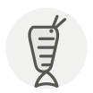

Crevette kuruma ◆
Kuruma prawn
| Nom latin | Marsupenaeus japonicus |
|---|---|
| Famille | Crustacés & coquillages |
| Origine | Côtes japonaises, élevée depuis les années 1930 |
| Saison | novembre – février |
| Goût | Sucré · Iodé · Délicat |
| Prix courant | 150–300 €/kg |
Ce que c’est
Kuruma veut dire « roue » : les anneaux bruns et bleus se referment en cercle quand la crevette se recroqueville. Motosaku Fujinaga l’a fait pondre et grandir en bassin dès 1933 — première crevette pénéide élevée au monde — et toutes les fermes crevettières de la planète descendent de cette méthode.
En cuisine
Elle voyage vivante dans de la sciure humide et se tue au comptoir : achetez-la ainsi et cuisez-la dans l’heure — sa douceur tient à la fraîcheur de la mise à mort. Piquez une brochette le long du ventre avant de la pocher pour qu’elle cuise droite en nigiri, et comptez quatre-vingt-dix secondes dans l’eau salée, pas plus.
S’accorde avec
Saké junmai Sauce soja Wasabi Yuzu Kombu Fleur de sel de Guérande Shiso Sudachi
De saison en même temps
Crevette nordique (amaebi) Pétoncle de baie Palourde Crabe dormeur du Pacifique Églefin Hokkigai (mactre)
Une erreur ici, ou un oubli ? Dites-le nous